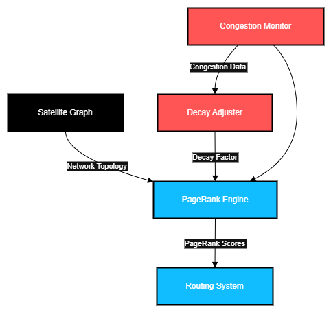

Imagine a crucial package needs to be delivered across a vast, constantly shifting city, but instead of using the fastest, most reliable roads, the delivery truck just picks any road. Sometimes it gets stuck in traffic, sometimes it takes an unnecessarily long route, and sometimes a key bridge fails, causing massive delays. In Starlink's network, all satellites are currently treated somewhat equally for relaying data, meaning critical "hub" satellites might get overloaded, or optimal paths aren't fully utilized. This business case is about intelligently identifying and prioritizing the most important and reliable communication paths in the constellation , like choosing the "superhighways" of space, to ensure data flows efficiently and reliably, even if a key link is congested or goes down.
Starlink uses orbital proximity and signal strength for routing but doesn’t account for network centrality. All satellites are treated equally for relaying, which can lead to underuse or overuse of certain nodes. [Source: MIT Tech Review – Starlink Routing Algorithms Overview, 2023]
Use PageRank algorithm to assign importance scores to satellites based on their connectivity in the network graph, prioritizing stable, high-PageRank satellites for routing. Introduce a redundancy mechanism to store primary, secondary, and tertiary central nodes (top three PageRank satellites) to mitigate Single point of failure (SPOF) . Apply a congestion decay factor to prevent overloading and reroute to backup nodes if the primary fails.
PageRank, effectively measures satellite centrality in directed graphs, identifying critical relay nodes. Combined with congestion feedback and redundancy, it avoids bottlenecks and ensures fault tolerance, enhancing Starlink’s routing reliability.
Prioritizes stable relay paths, avoids bottlenecks, and enhances routing resiliency by using secondary/tertiary nodes to prevent single point failures
If satellite S9 has a high PageRank score, it’s prioritized for routing. If S9 is congested or fails, the system falls back to its secondary (e.g., S3) or tertiary (e.g., S1) node from the backup list, ensuring reliable load distribution.
ASCII Sketch: 
Diagram Description: The satellite graph feeds topology data to a PageRank engine, which outputs scores to the routing system. A congestion monitor adjusts a decay factor to prevent overloading central satellites.
import numpy as np
import numpy as np
import matplotlib.pyplot as plt
def pagerank(graph, d=0.85, max_iter=100, congestion=None):
"""
Compute PageRank scores with congestion feedback and backup nodes.
Args:
graph (list): Adjacency matrix of satellite network (weights = signal strength).
d (float): Damping factor (default 0.85).
max_iter (int): Maximum iterations for convergence.
congestion (list): Congestion factors per node (0 for failed, 1 for normal).
Returns:
tuple: (PageRank scores, backup dictionary {node: [secondary, tertiary]}).
"""
if not graph or not all(len(row) == len(graph) for row in graph):
raise ValueError("Invalid graph: must be a non-empty square matrix")
N = len(graph)
rank = np.array([1.0 / N] * N)
if congestion is None:
congestion = [1] * N
# Compute PageRank
for _ in range(max_iter):
new_rank = np.array([(1 - d) / N] * N)
for u in range(N):
sum_outgoing_weights = sum(graph[u])
if sum_outgoing_weights == 0:
continue
for v in range(N):
if graph[u][v] > 0:
new_rank[v] += d * rank[u] * (graph[u][v] / sum_outgoing_weights) * congestion[u]
rank = new_rank / np.sum(new_rank)
# Compute backup nodes
backups = {}
for u in range(N):
# Sort nodes by PageRank, exclude u, pick top 2 as secondary/tertiary
sorted_nodes = sorted(range(N), key=lambda x: rank[x], reverse=True)
sorted_nodes = [v for v in sorted_nodes if v != u]
backups[u] = sorted_nodes[:2] if len(sorted_nodes) >= 2 else sorted_nodes + [0] * (2 - len(sorted_nodes))
return rank, backups
def simulate_failure(graph, ranks, backups, failed_node, congestion):
"""Simulate node failure and reroute using backup nodes."""
if not (0 <= failed_node < len(graph)):
raise ValueError("Invalid failed node index")
congestion[failed_node] = 0 # Mark node as failed
print(f"Node S{failed_node+1} failed. Using backups: S{backups[failed_node][0]+1}, S{backups[failed_node][1]+1}")
# Rerun PageRank with updated congestion
new_ranks, new_backups = pagerank(graph, d=0.6, congestion=congestion) # Lower d for failure recovery
return new_ranks, new_backups
# Simulate Starlink network
graph = [
[0, 0.5, 0.3, 0],
[0.4, 0, 0.2, 0],
[0.3, 0.3, 0, 0.4],
[0, 0, 0.4, 0]
]
congestion = [1, 0.8, 1, 0.9]
try:
# Compute initial PageRank and backups
ranks, backups = pagerank(graph, d=0.6, congestion=congestion)
print("Initial PageRank Scores:", ranks)
print("Backup Nodes:", {f"S{k+1}": [f"S{v+1}" for v in val] for k, val in backups.items()})
# Simulate failure of node S3 (index 2)
failed_node = 2
new_ranks, new_backups = simulate_failure(graph, ranks, backups, failed_node, congestion.copy())
print("PageRank Scores after S3 Failure:", new_ranks)
# Visualize
labels = [f'S{i+1}' for i in range(len(ranks))]
plt.figure(figsize=(8, 6))
plt.bar(labels, ranks, color=['blue' if i != failed_node else 'red' for i in range(len(ranks))])
for i in range(len(labels)):
plt.text(i, ranks[i] + 0.01, f'Backups: S{backups[i][0]+1}, S{backups[i][1]+1}', fontsize=8, ha='center')
plt.xlabel('Satellites')
plt.ylabel('PageRank Score')
plt.title('PageRank with Backup Nodes (Red: Failed Node)')
plt.savefig('page_rank_plot.png')
plt.close()
except ValueError as e:
print(f"Error: {e}")
The BFS module has the following complexities:
Applying PageRank to prioritize satellite communication paths in Starlink’s network was an exciting way to use a well-known algorithm in a modern, real-world scenario. The strength of this case lies in adapting PageRank, originally designed for web page ranking, to a dynamic satellite network. By assigning centrality scores to satellites, we ensured critical relay nodes are prioritized, improving routing efficiency. Adding a congestion decay factor and backup nodes (secondary and tertiary) addressed practical challenges like overloading and single point failures, making the solution more resilient. The backup node mechanism, stored in a dictionary, was a creative way to enhance fault tolerance, ensuring the network remains operational even if a high-PageRank satellite fails.
However, the solution has limitations that highlight areas for improvement. The simulation assumes a static graph with fixed weights, ignoring real-time variables like satellite orbital dynamics, varying signal strengths, or user demand fluctuations. These assumptions simplify the problem but don’t fully capture Starlink’s complex, dynamic topology. Before implementation, we’d need to account for these factors, such as by integrating real-time telemetry data or recomputing PageRank more frequently, which could increase computational costs. Additionally, the backup node selection relies solely on Page